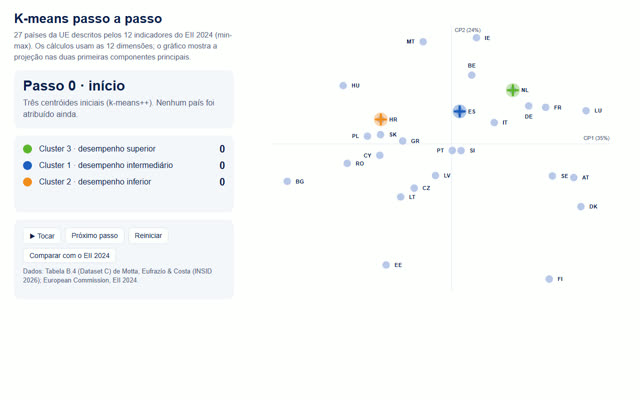
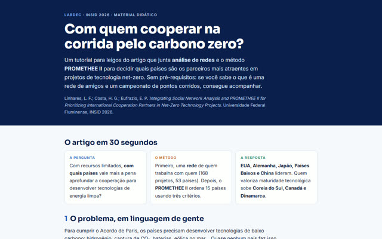
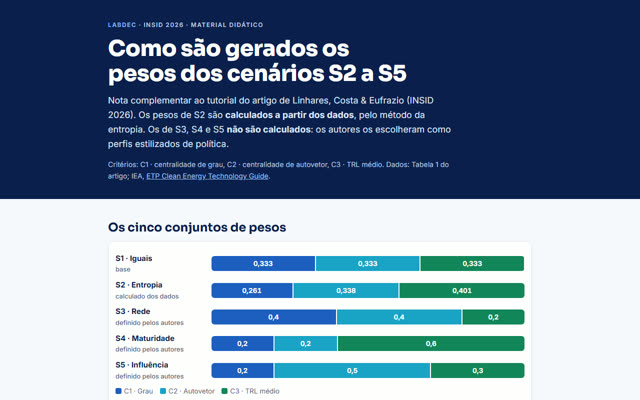
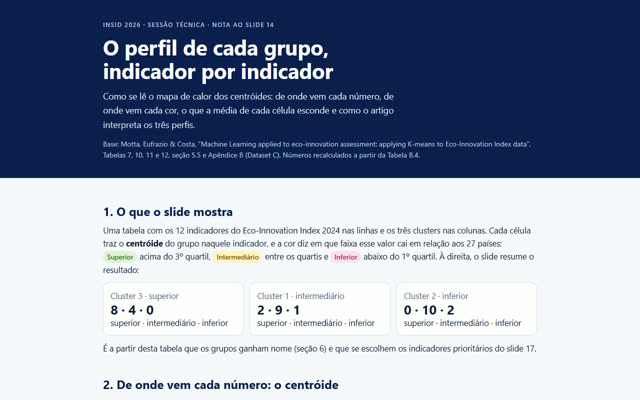
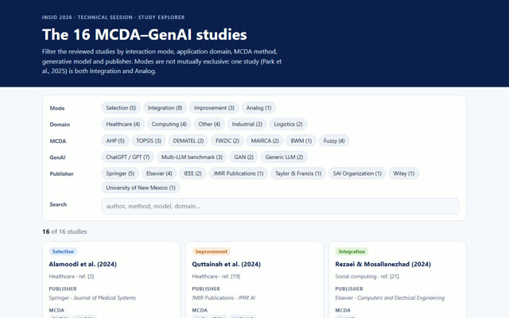

K-means passo a passoK-means step by step
O K-means com dados reais: os 27 países da UE nos 12 indicadores do Eco-Innovation Index 2024, iteração por iteração, até a partição final.
K-means on real data: the 27 EU countries on the 12 indicators of the Eco-Innovation Index 2024, iteration by iteration, up to the final partition.

Análise de redes + PROMETHEE II para leigosNetwork analysis + PROMETHEE II for beginners
Tutorial interativo: com quem um país deve cooperar na corrida pelo carbono zero? Centralidade em redes, fluxos do PROMETHEE II e cenários de pesos.
Interactive tutorial: who should a country cooperate with in the race to net zero? Network centrality, PROMETHEE II flows and weight scenarios.

Como são gerados os pesos dos cenáriosHow the scenario weights are built
Pesos por entropia, calculados a partir dos dados, e pesos definidos pelos autores: os cinco conjuntos de pesos usados na análise.
Entropy weights computed from the data and weights set by the authors: the five weight sets used in the analysis.

Como ler um mapa de calor de clustersReading a cluster heat map
De onde vem cada número e cada cor de um mapa de calor de centróides, e o que a média de cada grupo esconde.
Where each number and colour in a centroid heat map comes from, and what each group's mean hides.

Explorador: MCDA e IA generativaExplorer: MCDA and generative AI
Filtre os estudos de uma revisão sistemática sobre MCDA e IA generativa por modo de interação, domínio, método e modelo.
Filter the studies of a systematic review on MCDA and generative AI by interaction mode, domain, method and model.